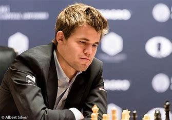
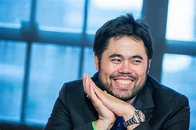
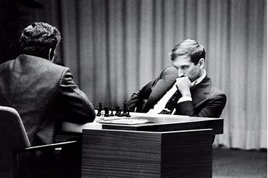

Magnus Carlsen

I have been a fan of chess for many years now, and out of all the amazing players out there, Magnus Carlsen is my favorite. He has consistently been one of the top players in the world since he first burst onto the scene as a prodigy in 2004. His strategic and tactical prowess is remarkable; he is able to outplay opponents with his great endgame technique, and he can spot weaknesses in positions that others don't. His ability to outplay opponents in long, complicated games is simply astounding.
>
Hikaru Nakamura

I love Hikaru Nakamura for his aggressive playing style, his deep understanding of the game, and his tireless work ethic. He has achieved great success in both classical and rapid chess, making him a well-rounded player. His ability to think creatively and identify innovative strategies makes him a pleasure to watch. I admire his ability to outplay even the strongest opponents, and his resilience despite the constant pressure.
>
Bobby Fischer

I love Bobby Fischer because he was a true chess genius. He was a World Chess Champion who was able to defeat some of the greatest chess players of all time. He was a master strategist who was able to outsmart his opponents and make creative moves that no one else thought of. His games were always unpredictable and exciting. He was also a passionate player who loved the game of chess and wanted to win above all else. His dedication and skill are an inspiration to me.
>